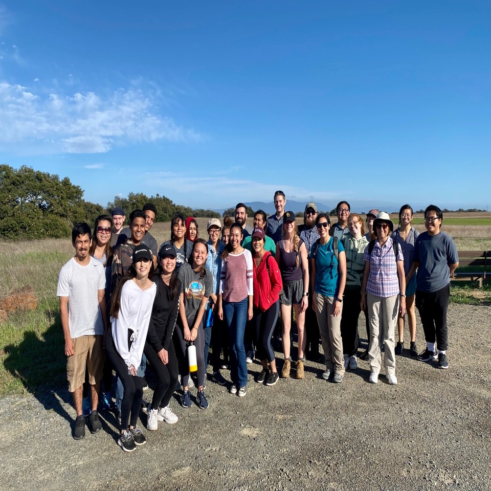
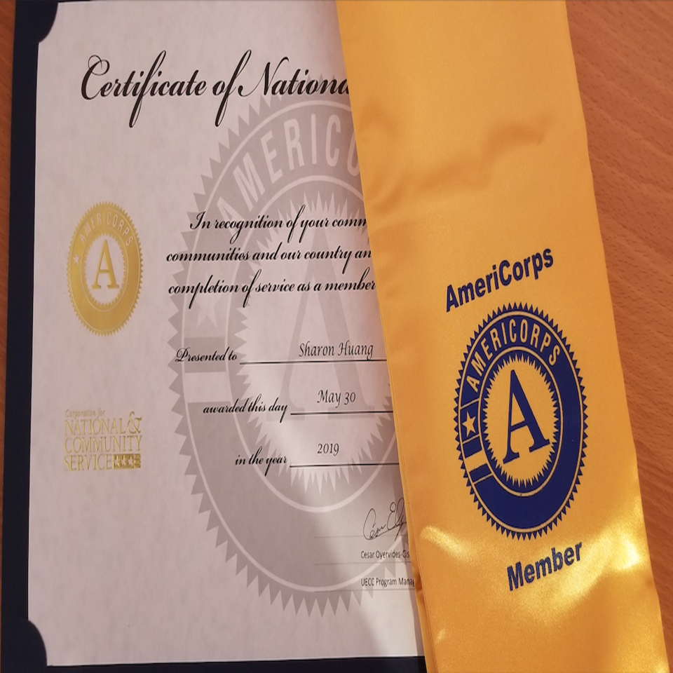
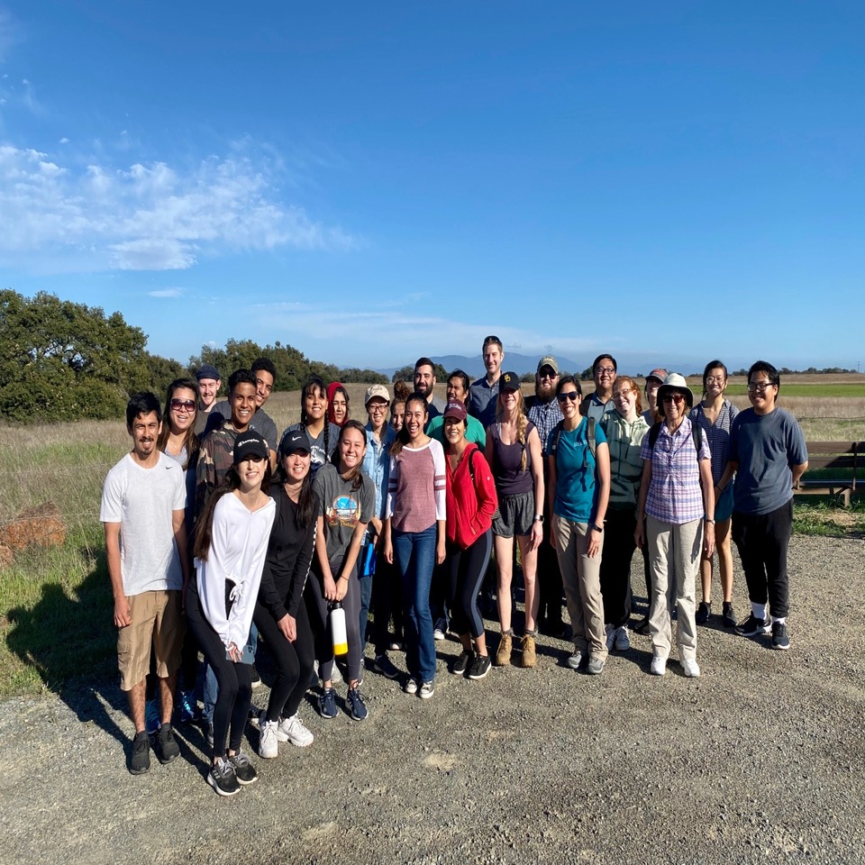
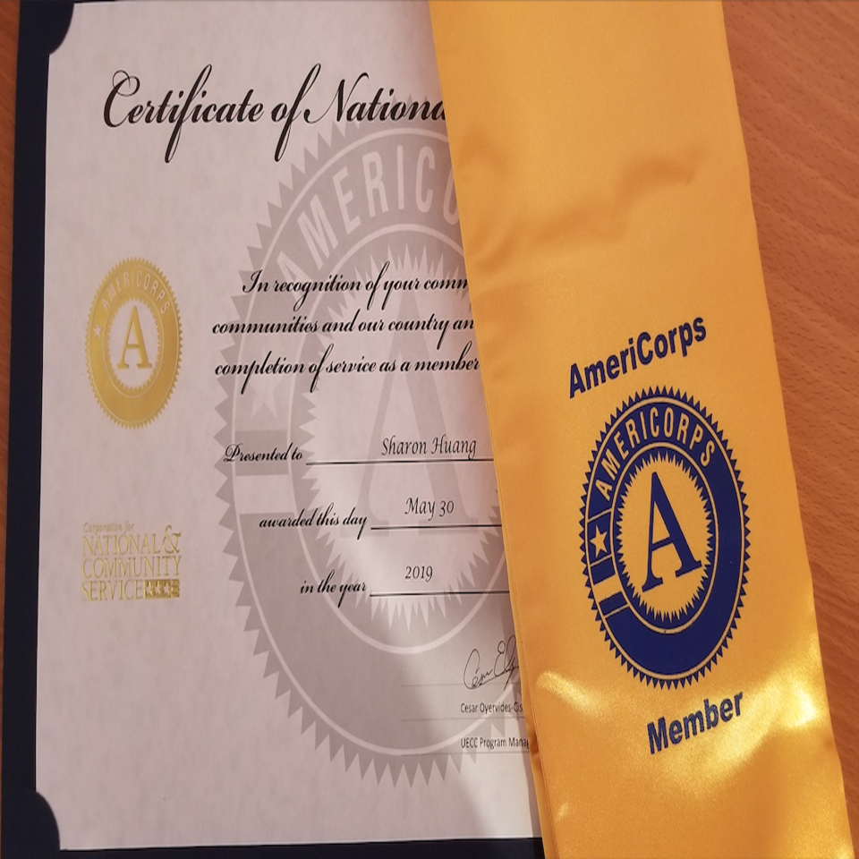

Sharon Huang
My name is Sharon Huang. I am currently a fourth year Biology major student at University of California, Riverside with a GPA of 3.05. Although I do not have much work experience in the field I am studying, I have done other jobs and activities outside of my major and comfort zone. Throughout my college years, I have been, and still am, discovering and gaining experiences in what I want and like to do. Being ambitious, I am determined to finish any task given and ready to take on any challenge. In addition, my friends would describe me as responsible, hardworking, and a good listener. During my free time, I like to spend time with family and friends as well as watch movies and dramas. Hobbies of mine that come to mind include swimming and playing basketball for fun. Although I am not a good cook, I have been learning how to cook using recipes found online for my family and myself to enjoy. As the eldest, I want to become a person my siblings can look up to.
For two summers, I have volunteered at a summer school to help teachers run classes and look after classrooms ranging from 1st-6th grade during my college studies. Using my average communication skills, I was able to understand and help solve problems that occur between students. I came out of volunteering with a better understanding about the importance of having excellent communication, listening, and organizational skills when it comes to teaching. Afterwards, with a passion to further improve my communication and organizational skills, I joined the UECC AmeriCorps Mentor program to become a tutor and do some community service during my junior year of college. I was responsible in tutoring elementary (Kindergarten, 1st grade, and 4th grade) students and organizing different activities to further promote their learning abilities. At the end of my service, I obtained a certificate of completion from the UECC Program.
Additionally, I worked part-time as a barista and server at a teahouse called A Plus Teahouse. With my good customer service skills, I was able to provide assistance to customers, as well as answering questions and responding to any complaints about the food, beverages, and service. As a bartender and server, I was responsible for ensuring that customers are satisfied with what they ordered and the service I provided them. With this experience, I was able to understand the importance of excellent customer service and the ability to work in a fast-paced manner within a high-intensity environment. After strengthening my communication, organizational, and customer service skills, I am looking for more volunteering and research opportunities around the major I am in to build up my leadership skills.
Experience
Barista/Server
• Responsible for welcoming customers and providing great customer service
• Took down orders, made drinks, organized and refilled supplies
• Often checked if storage low in inventory
Tutor
• Tutored elementary students, reviewed and commented on students' performance
• Responsible for helping students to develop skills at or above grade level
Volunteer
• Shadowed teachers and assisted in looking after students
• Prepared and organized events that occurred in the school
• Tutored students who needed additional help one-on-one
• Taught art class from time to time
Education
University of California, Riverside
Portfolio




 